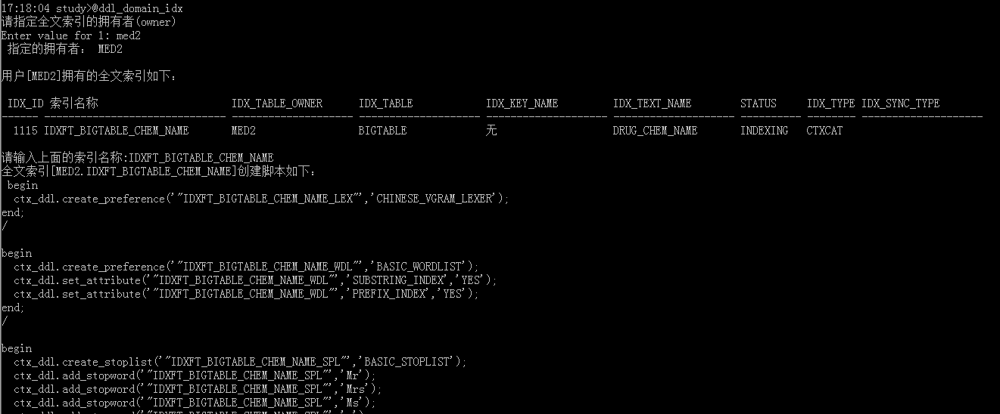

以下脚本功能基于后台dlt_sys$MigrateObj包实现，该包实现了oracle的所有几乎对象
procedure migrateObj_ as begin if m_migrateobj.obj_type = 'SEQUENCE' then mSequence; return; end if; if m_migrateobj.obj_type = 'VIEW' then mView; return; end if; if m_migrateobj.obj_type = 'TABLE' then mTable; return; end if; if m_migrateobj.obj_type = 'INDEX' then mIndex; -- deal full text index with mFullTextIndex in mIndex return; end if; -- DATABASE LINK if m_migrateobj.obj_type = 'DATABASE LINK' then mDbLink; return; end if; -- MATERIALIZED VIEW if m_migrateobj.obj_type = 'MATERIALIZED VIEW' then mMView; return; end if; -- if m_migrateobj.obj_type = 'SYNONYM' then mSynonym; return; end if; if m_migrateobj.obj_type in ('PROCEDURE', 'FUNCTION', 'PACKAGE', 'PACKAGE BODY', 'TYPE', 'TYPE BODY') then mProcedure; return; end if; if m_migrateobj.obj_type = 'JOB' then mJOb; return; end if; if m_migrateobj.obj_type = 'TRIGGER' then mTrigger; return; end if; --记录未处理的类型 mUnknownObjType; end;基于该包可以自定义迁移脚本。
ddl_domain_idx.sql:获取指定schema中全文索引的创建脚本Usage：
- @ddl_domain_idx
- @ddl_domain_idx USER --代表当前用户
17:18:04 study>@ddl_domain_idx
请指定全文索引的拥有者(owner)
Enter value for 1: med2
指定的拥有者： MED2
用户[MED2]拥有的全文索引如下：
IDX_ID 索引名称 IDX_TABLE_OWNER IDX_TABLE IDX_KEY_NAME IDX_TEXT_NAME STATUS IDX_TYPE IDX_SYNC_TYPE
------ ------------------------------ -------------------- -------------------- -------------------- -------------------- ---------- -------- --------------------
1115 IDXFT_BIGTABLE_CHEM_NAME MED2 BIGTABLE 无 DRUG_CHEM_NAME INDEXING CTXCAT
请输入上面的索引名称:IDXFT_BIGTABLE_CHEM_NAME
-- 全文索引[MED2.IDXFT_BIGTABLE_CHEM_NAME]创建脚本如下：
begin
ctx_ddl.create_preference('"IDXFT_BIGTABLE_CHEM_NAME_LEX"','CHINESE_VGRAM_LEXER');
end;
/
begin
ctx_ddl.create_preference('"IDXFT_BIGTABLE_CHEM_NAME_WDL"','BASIC_WORDLIST');
ctx_ddl.set_attribute('"IDXFT_BIGTABLE_CHEM_NAME_WDL"','SUBSTRING_INDEX','YES');
ctx_ddl.set_attribute('"IDXFT_BIGTABLE_CHEM_NAME_WDL"','PREFIX_INDEX','YES');
end;
/
begin
ctx_ddl.create_stoplist('"IDXFT_BIGTABLE_CHEM_NAME_SPL"','BASIC_STOPLIST');
ctx_ddl.add_stopword('"IDXFT_BIGTABLE_CHEM_NAME_SPL"','Mr');
ctx_ddl.add_stopword('"IDXFT_BIGTABLE_CHEM_NAME_SPL"','Mrs');
ctx_ddl.add_stopword('"IDXFT_BIGTABLE_CHEM_NAME_SPL"','Ms');
ctx_ddl.add_stopword('"IDXFT_BIGTABLE_CHEM_NAME_SPL"','a');
ctx_ddl.add_stopword('"IDXFT_BIGTABLE_CHEM_NAME_SPL"','all');
ctx_ddl.add_stopword('"IDXFT_BIGTABLE_CHEM_NAME_SPL"','almost');
ctx_ddl.add_stopword('"IDXFT_BIGTABLE_CHEM_NAME_SPL"','also');
ctx_ddl.add_stopword('"IDXFT_BIGTABLE_CHEM_NAME_SPL"','although');
ctx_ddl.add_stopword('"IDXFT_BIGTABLE_CHEM_NAME_SPL"','an');
ctx_ddl.add_stopword('"IDXFT_BIGTABLE_CHEM_NAME_SPL"','and');
ctx_ddl.add_stopword('"IDXFT_BIGTABLE_CHEM_NAME_SPL"','any');
ctx_ddl.add_stopword('"IDXFT_BIGTABLE_CHEM_NAME_SPL"','are');
ctx_ddl.add_stopword('"IDXFT_BIGTABLE_CHEM_NAME_SPL"','as');
ctx_ddl.add_stopword('"IDXFT_BIGTABLE_CHEM_NAME_SPL"','at');
ctx_ddl.add_stopword('"IDXFT_BIGTABLE_CHEM_NAME_SPL"','be');
ctx_ddl.add_stopword('"IDXFT_BIGTABLE_CHEM_NAME_SPL"','because');
ctx_ddl.add_stopword('"IDXFT_BIGTABLE_CHEM_NAME_SPL"','been');
ctx_ddl.add_stopword('"IDXFT_BIGTABLE_CHEM_NAME_SPL"','both');
ctx_ddl.add_stopword('"IDXFT_BIGTABLE_CHEM_NAME_SPL"','but');
ctx_ddl.add_stopword('"IDXFT_BIGTABLE_CHEM_NAME_SPL"','by');
ctx_ddl.add_stopword('"IDXFT_BIGTABLE_CHEM_NAME_SPL"','can');
ctx_ddl.add_stopword('"IDXFT_BIGTABLE_CHEM_NAME_SPL"','could');
ctx_ddl.add_stopword('"IDXFT_BIGTABLE_CHEM_NAME_SPL"','d');
ctx_ddl.add_stopword('"IDXFT_BIGTABLE_CHEM_NAME_SPL"','did');
ctx_ddl.add_stopword('"IDXFT_BIGTABLE_CHEM_NAME_SPL"','do');
ctx_ddl.add_stopword('"IDXFT_BIGTABLE_CHEM_NAME_SPL"','does');
ctx_ddl.add_stopword('"IDXFT_BIGTABLE_CHEM_NAME_SPL"','either');
ctx_ddl.add_stopword('"IDXFT_BIGTABLE_CHEM_NAME_SPL"','for');
ctx_ddl.add_stopword('"IDXFT_BIGTABLE_CHEM_NAME_SPL"','from');
ctx_ddl.add_stopword('"IDXFT_BIGTABLE_CHEM_NAME_SPL"','had');
ctx_ddl.add_stopword('"IDXFT_BIGTABLE_CHEM_NAME_SPL"','has');
ctx_ddl.add_stopword('"IDXFT_BIGTABLE_CHEM_NAME_SPL"','have');
ctx_ddl.add_stopword('"IDXFT_BIGTABLE_CHEM_NAME_SPL"','having');
ctx_ddl.add_stopword('"IDXFT_BIGTABLE_CHEM_NAME_SPL"','he');
ctx_ddl.add_stopword('"IDXFT_BIGTABLE_CHEM_NAME_SPL"','her');
ctx_ddl.add_stopword('"IDXFT_BIGTABLE_CHEM_NAME_SPL"','here');
ctx_ddl.add_stopword('"IDXFT_BIGTABLE_CHEM_NAME_SPL"','hers');
ctx_ddl.add_stopword('"IDXFT_BIGTABLE_CHEM_NAME_SPL"','him');
ctx_ddl.add_stopword('"IDXFT_BIGTABLE_CHEM_NAME_SPL"','his');
ctx_ddl.add_stopword('"IDXFT_BIGTABLE_CHEM_NAME_SPL"','how');
ctx_ddl.add_stopword('"IDXFT_BIGTABLE_CHEM_NAME_SPL"','however');
ctx_ddl.add_stopword('"IDXFT_BIGTABLE_CHEM_NAME_SPL"','i');
ctx_ddl.add_stopword('"IDXFT_BIGTABLE_CHEM_NAME_SPL"','if');
ctx_ddl.add_stopword('"IDXFT_BIGTABLE_CHEM_NAME_SPL"','in');
ctx_ddl.add_stopword('"IDXFT_BIGTABLE_CHEM_NAME_SPL"','into');
ctx_ddl.add_stopword('"IDXFT_BIGTABLE_CHEM_NAME_SPL"','is');
ctx_ddl.add_stopword('"IDXFT_BIGTABLE_CHEM_NAME_SPL"','it');
ctx_ddl.add_stopword('"IDXFT_BIGTABLE_CHEM_NAME_SPL"','its');
ctx_ddl.add_stopword('"IDXFT_BIGTABLE_CHEM_NAME_SPL"','just');
ctx_ddl.add_stopword('"IDXFT_BIGTABLE_CHEM_NAME_SPL"','ll');
ctx_ddl.add_stopword('"IDXFT_BIGTABLE_CHEM_NAME_SPL"','me');
ctx_ddl.add_stopword('"IDXFT_BIGTABLE_CHEM_NAME_SPL"','might');
ctx_ddl.add_stopword('"IDXFT_BIGTABLE_CHEM_NAME_SPL"','my');
ctx_ddl.add_stopword('"IDXFT_BIGTABLE_CHEM_NAME_SPL"','no');
ctx_ddl.add_stopword('"IDXFT_BIGTABLE_CHEM_NAME_SPL"','non');
ctx_ddl.add_stopword('"IDXFT_BIGTABLE_CHEM_NAME_SPL"','nor');
ctx_ddl.add_stopword('"IDXFT_BIGTABLE_CHEM_NAME_SPL"','not');
ctx_ddl.add_stopword('"IDXFT_BIGTABLE_CHEM_NAME_SPL"','of');
ctx_ddl.add_stopword('"IDXFT_BIGTABLE_CHEM_NAME_SPL"','on');
ctx_ddl.add_stopword('"IDXFT_BIGTABLE_CHEM_NAME_SPL"','one');
ctx_ddl.add_stopword('"IDXFT_BIGTABLE_CHEM_NAME_SPL"','only');
ctx_ddl.add_stopword('"IDXFT_BIGTABLE_CHEM_NAME_SPL"','onto');
ctx_ddl.add_stopword('"IDXFT_BIGTABLE_CHEM_NAME_SPL"','or');
ctx_ddl.add_stopword('"IDXFT_BIGTABLE_CHEM_NAME_SPL"','our');
ctx_ddl.add_stopword('"IDXFT_BIGTABLE_CHEM_NAME_SPL"','ours');
ctx_ddl.add_stopword('"IDXFT_BIGTABLE_CHEM_NAME_SPL"','s');
ctx_ddl.add_stopword('"IDXFT_BIGTABLE_CHEM_NAME_SPL"','shall');
ctx_ddl.add_stopword('"IDXFT_BIGTABLE_CHEM_NAME_SPL"','she');
ctx_ddl.add_stopword('"IDXFT_BIGTABLE_CHEM_NAME_SPL"','should');
ctx_ddl.add_stopword('"IDXFT_BIGTABLE_CHEM_NAME_SPL"','since');
ctx_ddl.add_stopword('"IDXFT_BIGTABLE_CHEM_NAME_SPL"','so');
ctx_ddl.add_stopword('"IDXFT_BIGTABLE_CHEM_NAME_SPL"','some');
ctx_ddl.add_stopword('"IDXFT_BIGTABLE_CHEM_NAME_SPL"','still');
ctx_ddl.add_stopword('"IDXFT_BIGTABLE_CHEM_NAME_SPL"','such');
ctx_ddl.add_stopword('"IDXFT_BIGTABLE_CHEM_NAME_SPL"','t');
ctx_ddl.add_stopword('"IDXFT_BIGTABLE_CHEM_NAME_SPL"','than');
ctx_ddl.add_stopword('"IDXFT_BIGTABLE_CHEM_NAME_SPL"','that');
ctx_ddl.add_stopword('"IDXFT_BIGTABLE_CHEM_NAME_SPL"','the');
ctx_ddl.add_stopword('"IDXFT_BIGTABLE_CHEM_NAME_SPL"','their');
ctx_ddl.add_stopword('"IDXFT_BIGTABLE_CHEM_NAME_SPL"','them');
ctx_ddl.add_stopword('"IDXFT_BIGTABLE_CHEM_NAME_SPL"','then');
ctx_ddl.add_stopword('"IDXFT_BIGTABLE_CHEM_NAME_SPL"','there');
ctx_ddl.add_stopword('"IDXFT_BIGTABLE_CHEM_NAME_SPL"','therefore');
ctx_ddl.add_stopword('"IDXFT_BIGTABLE_CHEM_NAME_SPL"','these');
ctx_ddl.add_stopword('"IDXFT_BIGTABLE_CHEM_NAME_SPL"','they');
ctx_ddl.add_stopword('"IDXFT_BIGTABLE_CHEM_NAME_SPL"','this');
ctx_ddl.add_stopword('"IDXFT_BIGTABLE_CHEM_NAME_SPL"','those');
ctx_ddl.add_stopword('"IDXFT_BIGTABLE_CHEM_NAME_SPL"','though');
ctx_ddl.add_stopword('"IDXFT_BIGTABLE_CHEM_NAME_SPL"','through');
ctx_ddl.add_stopword('"IDXFT_BIGTABLE_CHEM_NAME_SPL"','thus');
ctx_ddl.add_stopword('"IDXFT_BIGTABLE_CHEM_NAME_SPL"','to');
ctx_ddl.add_stopword('"IDXFT_BIGTABLE_CHEM_NAME_SPL"','too');
ctx_ddl.add_stopword('"IDXFT_BIGTABLE_CHEM_NAME_SPL"','until');
ctx_ddl.add_stopword('"IDXFT_BIGTABLE_CHEM_NAME_SPL"','ve');
ctx_ddl.add_stopword('"IDXFT_BIGTABLE_CHEM_NAME_SPL"','very');
ctx_ddl.add_stopword('"IDXFT_BIGTABLE_CHEM_NAME_SPL"','was');
ctx_ddl.add_stopword('"IDXFT_BIGTABLE_CHEM_NAME_SPL"','we');
ctx_ddl.add_stopword('"IDXFT_BIGTABLE_CHEM_NAME_SPL"','were');
ctx_ddl.add_stopword('"IDXFT_BIGTABLE_CHEM_NAME_SPL"','what');
ctx_ddl.add_stopword('"IDXFT_BIGTABLE_CHEM_NAME_SPL"','when');
ctx_ddl.add_stopword('"IDXFT_BIGTABLE_CHEM_NAME_SPL"','where');
ctx_ddl.add_stopword('"IDXFT_BIGTABLE_CHEM_NAME_SPL"','whether');
ctx_ddl.add_stopword('"IDXFT_BIGTABLE_CHEM_NAME_SPL"','which');
ctx_ddl.add_stopword('"IDXFT_BIGTABLE_CHEM_NAME_SPL"','while');
ctx_ddl.add_stopword('"IDXFT_BIGTABLE_CHEM_NAME_SPL"','who');
ctx_ddl.add_stopword('"IDXFT_BIGTABLE_CHEM_NAME_SPL"','whose');
ctx_ddl.add_stopword('"IDXFT_BIGTABLE_CHEM_NAME_SPL"','why');
ctx_ddl.add_stopword('"IDXFT_BIGTABLE_CHEM_NAME_SPL"','will');
ctx_ddl.add_stopword('"IDXFT_BIGTABLE_CHEM_NAME_SPL"','with');
ctx_ddl.add_stopword('"IDXFT_BIGTABLE_CHEM_NAME_SPL"','would');
ctx_ddl.add_stopword('"IDXFT_BIGTABLE_CHEM_NAME_SPL"','yet');
ctx_ddl.add_stopword('"IDXFT_BIGTABLE_CHEM_NAME_SPL"','you');
ctx_ddl.add_stopword('"IDXFT_BIGTABLE_CHEM_NAME_SPL"','your');
ctx_ddl.add_stopword('"IDXFT_BIGTABLE_CHEM_NAME_SPL"','yours');
end;
/
begin
ctx_ddl.create_preference('"IDXFT_BIGTABLE_CHEM_NAME_STO"','BASIC_STORAGE');
ctx_ddl.set_attribute('"IDXFT_BIGTABLE_CHEM_NAME_STO"','I_TABLE_CLAUSE','tablespace users');
ctx_ddl.set_attribute('"IDXFT_BIGTABLE_CHEM_NAME_STO"','K_TABLE_CLAUSE','tablespace users');
ctx_ddl.set_attribute('"IDXFT_BIGTABLE_CHEM_NAME_STO"','R_TABLE_CLAUSE','tablespace users');
ctx_ddl.set_attribute('"IDXFT_BIGTABLE_CHEM_NAME_STO"','N_TABLE_CLAUSE','tablespace users');
ctx_ddl.set_attribute('"IDXFT_BIGTABLE_CHEM_NAME_STO"','I_INDEX_CLAUSE','tablespace users');
end;
/
begin
ctx_ddl.create_index_set('"IDXFT_BIGTABLE_CHEM_NAME_IXS"');
end;
/
begin
ctx_output.start_log('IDXFT_BIGTABLE_CHEM_NAME_LOG');
end;
/
create index "MED2"."IDXFT_BIGTABLE_CHEM_NAME"
on "MED2"."BIGTABLE"
("DRUG_CHEM_NAME")
indextype is ctxsys.ctxcat
parameters('
lexer "IDXFT_BIGTABLE_CHEM_NAME_LEX"
wordlist "IDXFT_BIGTABLE_CHEM_NAME_WDL"
stoplist "IDXFT_BIGTABLE_CHEM_NAME_SPL"
storage "IDXFT_BIGTABLE_CHEM_NAME_STO"
index set "IDXFT_BIGTABLE_CHEM_NAME_IXS"
')
/
begin
ctx_output.end_log;
end;
/
please more [E:\oradba_output\study-ddl_domain_idx_MED2_IDXFT_BIGTABLE_CHEM_NAME.sql]。
18:14:40 study>
study-ddl_domain_idx_MED2_IDXFT_BIGTABLE_CHEM_NAME.sql
ddl_object.sql:根据schema 和 object_name获取object创建脚本支持的对象类型：【TABLE|VIEW|TRIGGER|PROCEDURE|FUNCTION|PACKAGE|PACKAGE BODY|TYPE|TYPE BODY|SEQUENCE|INDEX|DATABASE LINK|MATERIALIZED VIEW|SYNONYM|JOB】
注：当对象为TABLE时，附带生成COMMENT和INDEX(包括全文索引)
18:14:40 study>@ddl_object请输入对象的用户:med2请输入对象的名称:bigtable正在获取[med2.bigtable]的脚本---- BIGTABLE (TABLE)-- CREATE TABLE "BIGTABLE" ( "DRUG_ID" NUMBER(15,0) NOT NULL ENABLE, "DRUG_CODE" VARCHAR2(20) NOT NULL ENABLE, "DRUG_CHEM_NAME" VARCHAR2(100) NOT NULL ENABLE, "DRUG_PINYIN" VARCHAR2(100) NOT NULL ENABLE, "DRUG_TRADE_NAME" VARCHAR2(100), "DRUG_SPEC" VARCHAR2(50) NOT NULL ENABLE, "DRUG_DOSE" VARCHAR2(20) NOT NULL ENABLE, "DRUG_MANUFATURER" VARCHAR2(100), "DRUG_LICENSE_NO" VARCHAR2(50), "DRUG_SOURCE_TYPE" NUMBER(1,0), "DRUG_PACKING_UNIT" VARCHAR2(20), "DRUG_DOSAGE_UNIT" VARCHAR2(20) NOT NULL ENABLE, "DRUG_DOSAGE_NUM" NUMBER NOT NULL ENABLE, "DRUG_APPERANCE_NUM" NUMBER, "DRUG_APPERANCE_UNIT" VARCHAR2(255), "DRUG_PHOTO" CLOB, "DRUG_TRADE_CODE" VARCHAR2(255), "DRUG_SPEC_TYPE" NUMBER(1,0), "STATUS" NUMBER(1,0), "REMARK" VARCHAR2(255), "DRUG_WB" VARCHAR2(100), "TEXT" CLOB ) SEGMENT CREATION IMMEDIATE PCTFREE 10 PCTUSED 40 INITRANS 1 MAXTRANS 255 NOCOMPRESS LOGGING TABLESPACE "USERS" LOB ("DRUG_PHOTO") STORE AS SECUREFILE ( TABLESPACE "USERS" ENABLE STORAGE IN ROW CHUNK 8192 NOCACHE LOGGING NOCOMPRESS KEEP_DUPLICATES ) LOB ("TEXT") STORE AS SECUREFILE ( TABLESPACE "USERS" ENABLE STORAGE IN ROW CHUNK 8192 NOCACHE LOGGING NOCOMPRESS KEEP_DUPLICATES ) ;---- BIGTABLE (COMMENT)-- COMMENT ON COLUMN "BIGTABLE"."DRUG_ID" IS 'ID'; COMMENT ON COLUMN "BIGTABLE"."DRUG_CODE" IS '编码'; COMMENT ON COLUMN "BIGTABLE"."DRUG_CHEM_NAME" IS '名称'; COMMENT ON COLUMN "BIGTABLE"."DRUG_PINYIN" IS '拼音';---- IDX_BIGTABLE_DRUG_ID (INDEX)-- CREATE INDEX "IDX_BIGTABLE_DRUG_ID" ON "BIGTABLE" ("DRUG_ID") PCTFREE 10 INITRANS 2 MAXTRANS 255 COMPUTE STATISTICS TABLESPACE "USERS" ;---- IDXFT_BIGTABLE_CHEM_NAME (FULLTEXT_INDEX)--begin ctx_ddl.create_preference('"IDXFT_BIGTABLE_CHEM_NAME_LEX"','CHINESE_VGRAM_LEXER');end;/begin ctx_ddl.create_preference('"IDXFT_BIGTABLE_CHEM_NAME_WDL"','BASIC_WORDLIST'); ctx_ddl.set_attribute('"IDXFT_BIGTABLE_CHEM_NAME_WDL"','SUBSTRING_INDEX','YES'); ctx_ddl.set_attribute('"IDXFT_BIGTABLE_CHEM_NAME_WDL"','PREFIX_INDEX','YES');end;/begin ctx_ddl.create_stoplist('"IDXFT_BIGTABLE_CHEM_NAME_SPL"','BASIC_STOPLIST'); ctx_ddl.add_stopword('"IDXFT_BIGTABLE_CHEM_NAME_SPL"','Mr'); ctx_ddl.add_stopword('"IDXFT_BIGTABLE_CHEM_NAME_SPL"','Mrs'); ctx_ddl.add_stopword('"IDXFT_BIGTABLE_CHEM_NAME_SPL"','Ms'); ctx_ddl.add_stopword('"IDXFT_BIGTABLE_CHEM_NAME_SPL"','a'); ctx_ddl.add_stopword('"IDXFT_BIGTABLE_CHEM_NAME_SPL"','all'); ctx_ddl.add_stopword('"IDXFT_BIGTABLE_CHEM_NAME_SPL"','almost'); ctx_ddl.add_stopword('"IDXFT_BIGTABLE_CHEM_NAME_SPL"','also'); ctx_ddl.add_stopword('"IDXFT_BIGTABLE_CHEM_NAME_SPL"','although'); ctx_ddl.add_stopword('"IDXFT_BIGTABLE_CHEM_NAME_SPL"','an'); ctx_ddl.add_stopword('"IDXFT_BIGTABLE_CHEM_NAME_SPL"','and'); ctx_ddl.add_stopword('"IDXFT_BIGTABLE_CHEM_NAME_SPL"','any'); ctx_ddl.add_stopword('"IDXFT_BIGTABLE_CHEM_NAME_SPL"','are'); ctx_ddl.add_stopword('"IDXFT_BIGTABLE_CHEM_NAME_SPL"','as'); ctx_ddl.add_stopword('"IDXFT_BIGTABLE_CHEM_NAME_SPL"','at'); ctx_ddl.add_stopword('"IDXFT_BIGTABLE_CHEM_NAME_SPL"','be'); ctx_ddl.add_stopword('"IDXFT_BIGTABLE_CHEM_NAME_SPL"','because'); ctx_ddl.add_stopword('"IDXFT_BIGTABLE_CHEM_NAME_SPL"','been'); ctx_ddl.add_stopword('"IDXFT_BIGTABLE_CHEM_NAME_SPL"','both'); ctx_ddl.add_stopword('"IDXFT_BIGTABLE_CHEM_NAME_SPL"','but'); ctx_ddl.add_stopword('"IDXFT_BIGTABLE_CHEM_NAME_SPL"','by'); ctx_ddl.add_stopword('"IDXFT_BIGTABLE_CHEM_NAME_SPL"','can'); ctx_ddl.add_stopword('"IDXFT_BIGTABLE_CHEM_NAME_SPL"','could'); ctx_ddl.add_stopword('"IDXFT_BIGTABLE_CHEM_NAME_SPL"','d'); ctx_ddl.add_stopword('"IDXFT_BIGTABLE_CHEM_NAME_SPL"','did'); ctx_ddl.add_stopword('"IDXFT_BIGTABLE_CHEM_NAME_SPL"','do'); ctx_ddl.add_stopword('"IDXFT_BIGTABLE_CHEM_NAME_SPL"','does'); ctx_ddl.add_stopword('"IDXFT_BIGTABLE_CHEM_NAME_SPL"','either'); ctx_ddl.add_stopword('"IDXFT_BIGTABLE_CHEM_NAME_SPL"','for'); ctx_ddl.add_stopword('"IDXFT_BIGTABLE_CHEM_NAME_SPL"','from'); ctx_ddl.add_stopword('"IDXFT_BIGTABLE_CHEM_NAME_SPL"','had'); ctx_ddl.add_stopword('"IDXFT_BIGTABLE_CHEM_NAME_SPL"','has'); ctx_ddl.add_stopword('"IDXFT_BIGTABLE_CHEM_NAME_SPL"','have'); ctx_ddl.add_stopword('"IDXFT_BIGTABLE_CHEM_NAME_SPL"','having'); ctx_ddl.add_stopword('"IDXFT_BIGTABLE_CHEM_NAME_SPL"','he'); ctx_ddl.add_stopword('"IDXFT_BIGTABLE_CHEM_NAME_SPL"','her'); ctx_ddl.add_stopword('"IDXFT_BIGTABLE_CHEM_NAME_SPL"','here'); ctx_ddl.add_stopword('"IDXFT_BIGTABLE_CHEM_NAME_SPL"','hers'); ctx_ddl.add_stopword('"IDXFT_BIGTABLE_CHEM_NAME_SPL"','him'); ctx_ddl.add_stopword('"IDXFT_BIGTABLE_CHEM_NAME_SPL"','his'); ctx_ddl.add_stopword('"IDXFT_BIGTABLE_CHEM_NAME_SPL"','how'); ctx_ddl.add_stopword('"IDXFT_BIGTABLE_CHEM_NAME_SPL"','however'); ctx_ddl.add_stopword('"IDXFT_BIGTABLE_CHEM_NAME_SPL"','i'); ctx_ddl.add_stopword('"IDXFT_BIGTABLE_CHEM_NAME_SPL"','if'); ctx_ddl.add_stopword('"IDXFT_BIGTABLE_CHEM_NAME_SPL"','in'); ctx_ddl.add_stopword('"IDXFT_BIGTABLE_CHEM_NAME_SPL"','into'); ctx_ddl.add_stopword('"IDXFT_BIGTABLE_CHEM_NAME_SPL"','is'); ctx_ddl.add_stopword('"IDXFT_BIGTABLE_CHEM_NAME_SPL"','it'); ctx_ddl.add_stopword('"IDXFT_BIGTABLE_CHEM_NAME_SPL"','its'); ctx_ddl.add_stopword('"IDXFT_BIGTABLE_CHEM_NAME_SPL"','just'); ctx_ddl.add_stopword('"IDXFT_BIGTABLE_CHEM_NAME_SPL"','ll'); ctx_ddl.add_stopword('"IDXFT_BIGTABLE_CHEM_NAME_SPL"','me'); ctx_ddl.add_stopword('"IDXFT_BIGTABLE_CHEM_NAME_SPL"','might'); ctx_ddl.add_stopword('"IDXFT_BIGTABLE_CHEM_NAME_SPL"','my'); ctx_ddl.add_stopword('"IDXFT_BIGTABLE_CHEM_NAME_SPL"','no'); ctx_ddl.add_stopword('"IDXFT_BIGTABLE_CHEM_NAME_SPL"','non'); ctx_ddl.add_stopword('"IDXFT_BIGTABLE_CHEM_NAME_SPL"','nor'); ctx_ddl.add_stopword('"IDXFT_BIGTABLE_CHEM_NAME_SPL"','not'); ctx_ddl.add_stopword('"IDXFT_BIGTABLE_CHEM_NAME_SPL"','of'); ctx_ddl.add_stopword('"IDXFT_BIGTABLE_CHEM_NAME_SPL"','on'); ctx_ddl.add_stopword('"IDXFT_BIGTABLE_CHEM_NAME_SPL"','one'); ctx_ddl.add_stopword('"IDXFT_BIGTABLE_CHEM_NAME_SPL"','only'); ctx_ddl.add_stopword('"IDXFT_BIGTABLE_CHEM_NAME_SPL"','onto'); ctx_ddl.add_stopword('"IDXFT_BIGTABLE_CHEM_NAME_SPL"','or'); ctx_ddl.add_stopword('"IDXFT_BIGTABLE_CHEM_NAME_SPL"','our'); ctx_ddl.add_stopword('"IDXFT_BIGTABLE_CHEM_NAME_SPL"','ours'); ctx_ddl.add_stopword('"IDXFT_BIGTABLE_CHEM_NAME_SPL"','s'); ctx_ddl.add_stopword('"IDXFT_BIGTABLE_CHEM_NAME_SPL"','shall'); ctx_ddl.add_stopword('"IDXFT_BIGTABLE_CHEM_NAME_SPL"','she'); ctx_ddl.add_stopword('"IDXFT_BIGTABLE_CHEM_NAME_SPL"','should'); ctx_ddl.add_stopword('"IDXFT_BIGTABLE_CHEM_NAME_SPL"','since'); ctx_ddl.add_stopword('"IDXFT_BIGTABLE_CHEM_NAME_SPL"','so'); ctx_ddl.add_stopword('"IDXFT_BIGTABLE_CHEM_NAME_SPL"','some'); ctx_ddl.add_stopword('"IDXFT_BIGTABLE_CHEM_NAME_SPL"','still'); ctx_ddl.add_stopword('"IDXFT_BIGTABLE_CHEM_NAME_SPL"','such'); ctx_ddl.add_stopword('"IDXFT_BIGTABLE_CHEM_NAME_SPL"','t'); ctx_ddl.add_stopword('"IDXFT_BIGTABLE_CHEM_NAME_SPL"','than'); ctx_ddl.add_stopword('"IDXFT_BIGTABLE_CHEM_NAME_SPL"','that'); ctx_ddl.add_stopword('"IDXFT_BIGTABLE_CHEM_NAME_SPL"','the'); ctx_ddl.add_stopword('"IDXFT_BIGTABLE_CHEM_NAME_SPL"','their'); ctx_ddl.add_stopword('"IDXFT_BIGTABLE_CHEM_NAME_SPL"','them'); ctx_ddl.add_stopword('"IDXFT_BIGTABLE_CHEM_NAME_SPL"','then'); ctx_ddl.add_stopword('"IDXFT_BIGTABLE_CHEM_NAME_SPL"','there'); ctx_ddl.add_stopword('"IDXFT_BIGTABLE_CHEM_NAME_SPL"','therefore'); ctx_ddl.add_stopword('"IDXFT_BIGTABLE_CHEM_NAME_SPL"','these'); ctx_ddl.add_stopword('"IDXFT_BIGTABLE_CHEM_NAME_SPL"','they'); ctx_ddl.add_stopword('"IDXFT_BIGTABLE_CHEM_NAME_SPL"','this'); ctx_ddl.add_stopword('"IDXFT_BIGTABLE_CHEM_NAME_SPL"','those'); ctx_ddl.add_stopword('"IDXFT_BIGTABLE_CHEM_NAME_SPL"','though'); ctx_ddl.add_stopword('"IDXFT_BIGTABLE_CHEM_NAME_SPL"','through'); ctx_ddl.add_stopword('"IDXFT_BIGTABLE_CHEM_NAME_SPL"','thus'); ctx_ddl.add_stopword('"IDXFT_BIGTABLE_CHEM_NAME_SPL"','to'); ctx_ddl.add_stopword('"IDXFT_BIGTABLE_CHEM_NAME_SPL"','too'); ctx_ddl.add_stopword('"IDXFT_BIGTABLE_CHEM_NAME_SPL"','until'); ctx_ddl.add_stopword('"IDXFT_BIGTABLE_CHEM_NAME_SPL"','ve'); ctx_ddl.add_stopword('"IDXFT_BIGTABLE_CHEM_NAME_SPL"','very'); ctx_ddl.add_stopword('"IDXFT_BIGTABLE_CHEM_NAME_SPL"','was'); ctx_ddl.add_stopword('"IDXFT_BIGTABLE_CHEM_NAME_SPL"','we'); ctx_ddl.add_stopword('"IDXFT_BIGTABLE_CHEM_NAME_SPL"','were'); ctx_ddl.add_stopword('"IDXFT_BIGTABLE_CHEM_NAME_SPL"','what'); ctx_ddl.add_stopword('"IDXFT_BIGTABLE_CHEM_NAME_SPL"','when'); ctx_ddl.add_stopword('"IDXFT_BIGTABLE_CHEM_NAME_SPL"','where'); ctx_ddl.add_stopword('"IDXFT_BIGTABLE_CHEM_NAME_SPL"','whether'); ctx_ddl.add_stopword('"IDXFT_BIGTABLE_CHEM_NAME_SPL"','which'); ctx_ddl.add_stopword('"IDXFT_BIGTABLE_CHEM_NAME_SPL"','while'); ctx_ddl.add_stopword('"IDXFT_BIGTABLE_CHEM_NAME_SPL"','who'); ctx_ddl.add_stopword('"IDXFT_BIGTABLE_CHEM_NAME_SPL"','whose'); ctx_ddl.add_stopword('"IDXFT_BIGTABLE_CHEM_NAME_SPL"','why'); ctx_ddl.add_stopword('"IDXFT_BIGTABLE_CHEM_NAME_SPL"','will'); ctx_ddl.add_stopword('"IDXFT_BIGTABLE_CHEM_NAME_SPL"','with'); ctx_ddl.add_stopword('"IDXFT_BIGTABLE_CHEM_NAME_SPL"','would'); ctx_ddl.add_stopword('"IDXFT_BIGTABLE_CHEM_NAME_SPL"','yet'); ctx_ddl.add_stopword('"IDXFT_BIGTABLE_CHEM_NAME_SPL"','you'); ctx_ddl.add_stopword('"IDXFT_BIGTABLE_CHEM_NAME_SPL"','your'); ctx_ddl.add_stopword('"IDXFT_BIGTABLE_CHEM_NAME_SPL"','yours');end;/begin ctx_ddl.create_preference('"IDXFT_BIGTABLE_CHEM_NAME_STO"','BASIC_STORAGE'); ctx_ddl.set_attribute('"IDXFT_BIGTABLE_CHEM_NAME_STO"','I_TABLE_CLAUSE','tablespace users'); ctx_ddl.set_attribute('"IDXFT_BIGTABLE_CHEM_NAME_STO"','K_TABLE_CLAUSE','tablespace users'); ctx_ddl.set_attribute('"IDXFT_BIGTABLE_CHEM_NAME_STO"','R_TABLE_CLAUSE','tablespace users'); ctx_ddl.set_attribute('"IDXFT_BIGTABLE_CHEM_NAME_STO"','N_TABLE_CLAUSE','tablespace users'); ctx_ddl.set_attribute('"IDXFT_BIGTABLE_CHEM_NAME_STO"','I_INDEX_CLAUSE','tablespace users');end;/begin ctx_ddl.create_index_set('"IDXFT_BIGTABLE_CHEM_NAME_IXS"');end;/begin ctx_output.start_log('IDXFT_BIGTABLE_CHEM_NAME_LOG');end;/create index "IDXFT_BIGTABLE_CHEM_NAME" on "BIGTABLE" ("DRUG_CHEM_NAME") indextype is ctxsys.ctxcat parameters(' lexer "IDXFT_BIGTABLE_CHEM_NAME_LEX" wordlist "IDXFT_BIGTABLE_CHEM_NAME_WDL" stoplist "IDXFT_BIGTABLE_CHEM_NAME_SPL" storage "IDXFT_BIGTABLE_CHEM_NAME_STO" index set "IDXFT_BIGTABLE_CHEM_NAME_IXS" ')/begin ctx_output.end_log;end;/please more [E:\oradba_output\study-ddl_object_med2_bigtable.sql]。study-ddl_object_med2_bigtable.sql
ddl_type.sql:根据schema 和 object type获取object创建脚本支持的object type：【TABLE|VIEW|TRIGGER|PROCEDURE|FUNCTION|PACKAGE|PACKAGE BODY|TYPE|TYPE BODY|SEQUENCE|INDEX|DATABASE LINK|MATERIALIZED VIEW|SYNONYM|JOB】
16:32:27 study>@ddl_type 请输入对象的用户:med2 对象类型:TABLE|VIEW|TRIGGER|PROCEDURE|FUNCTION|PACKAGE|PACKAGE BODY|TYPE|TYPE BODY|SEQUENCE|INDEX|DATABASE LINK|MATERIALIZED VIEW|SYNONYM|JOB 请输入对象的类型:SEQUENCE 正在获取用户[med2]中所有[SEQUENCE]对象的脚本 -- -- SEQ_DRUGCODE (SEQUENCE) -- CREATE SEQUENCE "SEQ_DRUGCODE" MINVALUE 1 MAXVALUE 9999999999999999999999999999 INCREMENT BY 1 START WITH 18020 CACHE 20 NOORDER NOCYCLE NOPARTITION ; -- -- SEQ_SHARE (SEQUENCE) -- CREATE SEQUENCE "SEQ_SHARE" MINVALUE 1 MAXVALUE 9999999999999999999999999999 INCREMENT BY 1 START WITH 1 CACHE 20 NOORDER NOCYCLE NOPARTITION ; please more [E:\oradba_output\study-ddl_object_med2_SEQUENCE.sql]。
study-ddl_object_med2_SEQUENCE.sql
ddl_schema.sql:获取指定schema中所有对象的创建脚本。支持的对象类型：【TABLE|VIEW|TRIGGER|PROCEDURE|FUNCTION|PACKAGE|PACKAGE BODY|TYPE|TYPE BODY|SEQUENCE|INDEX|DATABASE LINK|MATERIALIZED VIEW|SYNONYM|JOB】
17:01:51 study>@ddl_schema
请输入用户名:dba_dlt
正在获取[dba_dlt]的脚本--
-- DLT_ACCESS_SQL (TABLE)
--
CREATE GLOBAL TEMPORARY TABLE "DLT_ACCESS_SQL"
( "USERNAME" VARCHAR2(30),
"SQL_TEXT" CLOB
) ON COMMIT PRESERVE ROWS ;
--
-- DLT_BLOCKLOCK (TABLE)
--
CREATE GLOBAL TEMPORARY TABLE "DLT_BLOCKLOCK"
( "SESS_KEY" VARCHAR2(20),
"BLOCK_SESS_KEY" VARCHAR2(20),
"INST_ID" NUMBER,
"SID" NUMBER,
"SERIAL#" NUMBER,
......
......
......
--
-- PRINT_TABLE (PROCEDURE)
--
CREATE OR REPLACE EDITIONABLE PROCEDURE "PRINT_TABLE" (p_query IN VARCHAR2,
p_date_fmt IN VARCHAR2 DEFAULT 'yyyy-mm-dd hh24:mi:ss')
authid current_user as
begin
dlt_sys$t.print_table(p_query, p_date_fmt);
end;
/
please more [E:\oradba_output\study-ddl_schema_dba_dlt.sql]。
check_index.sql:检查表上index的状态(适用分区表和分区index)，并对损坏的index生成重建SQL。特别是我们维护分区表时，可能损坏表上的index和分区index，通过该脚本快速进行check。
Usage：
@check_index <schema_name> <tablename>
09:48:12 study>@check_index 请指定表的拥有者(owner),表名称(table_name) Enter value for 1: med2 Enter value for 2: bigtable 指定的拥有者： MED2 指定的表名称： BIGTABLE 表[MED2.BIGTABLE]的index状态结果 OWNER INDEX_NAME INDEX_TYPE PARTITION_NAME SUBPARTITION_NAME STATUS TABLESPACE_NAME ---------- ------------------------------ -------------------- ------------------------------ ------------------------------ -------- ------------------------------ MED2 IDXFT_BIGTABLE_CHEM_NAME DOMAIN NO NO INPROGRS MED2 IDX_BIGTABLE_DRUG_ID NORMAL NO NO VALID USERS MED2 SYS_IL0000092338C00022$$ LOB NO NO VALID USERS MED2 SYS_IL0000092338C00016$$ LOB NO NO VALID USERS 请执行下面SQL,重建不可用index SQL ------------------------------------------------------------------------------------------------- DOMAIN INDEX [MED2.IDXFT_BIGTABLE_CHEM_NAME] need to manually rebuild. please more [E:\oradba_output\study-check_index.txt]。
这个例子没有体现出‘重建不可用index的 SQL’，以后补个操作分区表，index损坏的例子。
相关脚本
addmrpt.sql ashrpt.sql awrddrpt.sql awrrpt.sql awrsqrpt.sql addmrpti.sql ashrpti.sql awrddrpti.sql awrrpti.sql awrsqrpti.sql
上面的脚本名字与oracle自带的系统脚本名字一致，功能也一样，仅仅做了简单的包装``
- 方便使用，无需输入脚本路径
- 输出文件统一存放在
script_output_dir配置的输出目录- 自动打开输出文件
以addmrpt.sql为例子，其他类似：
17:10:53 study>@addmrpt
Current Instance
~~~~~~~~~~~~~~~~
DB Id DB Name Inst Num Instance
----------- ------------ -------- ------------
1600670143 ORADLT 1 oradlt
Instances in this Workload Repository schema
~~~~~~~~~~~~~~~~~~~~~~~~~~~~~~~~~~~~~~~~~~~~
DB Id Inst Num DB Name Instance Host
------------ -------- ------------ ------------ ------------
* 1600670143 1 ORADLT oradlt DENGLT-PC
Using 1600670143 for database Id
Using 1 for instance number
Specify the number of days of snapshots to choose from
~~~~~~~~~~~~~~~~~~~~~~~~~~~~~~~~~~~~~~~~~~~~~~~~~~~~~~
Entering the number of days (n) will result in the most recent
(n) days of snapshots being listed. Pressing <return> without
specifying a number lists all completed snapshots.
Listing the last 3 days of Completed Snapshots
Snap
Instance DB Name Snap Id Snap Started Level
------------ ------------ --------- ------------------ -----
oradlt ORADLT 171 03 Jul 2017 10:23 1
172 03 Jul 2017 11:00 1
173 03 Jul 2017 12:01 1
174 03 Jul 2017 13:00 1
175 03 Jul 2017 14:00 1
176 03 Jul 2017 15:00 1
177 03 Jul 2017 16:00 1
178 03 Jul 2017 17:00 1
179 03 Jul 2017 18:00 1
180 04 Jul 2017 16:21 1
181 04 Jul 2017 17:00 1
Specify the Begin and End Snapshot Ids
~~~~~~~~~~~~~~~~~~~~~~~~~~~~~~~~~~~~~~
Enter value for begin_snap: 180
Begin Snapshot Id specified: 180
Enter value for end_snap: 181
Specify the Report Name
~~~~~~~~~~~~~~~~~~~~~~~
The default report file name is addmrpt_1_180_181.txt. To use this name,
press <return> to continue, otherwise enter an alternative.
Enter value for report_name:
Using the report name addmrpt_1_180_181.txt
Running the ADDM analysis on the specified pair of snapshots ...
Generating the ADDM report for this analysis ...
ADDM Report for Task 'TASK_473'
-------------------------------
Analysis Period
---------------
AWR snapshot range from 180 to 181.
Time period starts at 04-JUL-17 04.21.50 PM
Time period ends at 04-JUL-17 05.00.19 PM
...
...
...
End of Report
Report written to addmrpt_1_180_181.txt
请输入上面的报表名称进行查看。
Enter value for report_name: addmrpt_1_180_181.txt
正在移动文件[addmrpt_1_180_181.txt]到[E:\oradba_output\]
移动了 1 个文件。
please more [E:\oradba_output\addmrpt_1_180_181.txt]。
解密由java代码实现(支持中文)，支持10g、11g、12c
set classpath=.;ojdbc14.jar set ip=127.0.0.1 set port=1521 set sid=pdboradlt set username=dba_dlt set password=**** set object_owner=sys set object_name=dbms_lock set object_type="PACKAGE BODY" java UnWrap %ip% %port% %sid% %username% %password% %object_owner% %object_name% %object_type%
sys.dbms_lock解密后代码：
PACKAGE BODY dbms_lock IS
PROCEDURE PSDLGT(ID BINARY_INTEGER, LOCKMODE BINARY_INTEGER,
MAXHOLDERS BINARY_INTEGER, TIMEOUT BINARY_INTEGER,
RELEASE_ON_COMMIT BINARY_INTEGER,
GLOBAL_LOCK BINARY_INTEGER, STATUS IN OUT BINARY_INTEGER);
PRAGMA INTERFACE (C, PSDLGT);
PROCEDURE PSDLCV(ID BINARY_INTEGER, LOCKMODE BINARY_INTEGER,
MAXHOLDERS BINARY_INTEGER, TIMEOUT BINARY_INTEGER,
STATUS IN OUT BINARY_INTEGER);
PRAGMA INTERFACE (C, PSDLCV);
PROCEDURE PSDLRL(ID BINARY_INTEGER, STATUS IN OUT BINARY_INTEGER);
PRAGMA INTERFACE (C, PSDLRL);
PROCEDURE PSDWAT(TENS_OF_MILLISECS BINARY_INTEGER);
PRAGMA INTERFACE (C, PSDWAT);
PROCEDURE CONVERTBACK(LOCKHANDLE VARCHAR2,
ID OUT INTEGER,
STATUS OUT INTEGER) IS
TMPID INTEGER;
BEGIN
BEGIN
STATUS := 0;
ID := -1;
IF LENGTH(LOCKHANDLE)=0 THEN
STATUS := 5;
ELSE
TMPID := TO_NUMBER(SUBSTR(LOCKHANDLE,1,10));
IF (TMPID <> TO_NUMBER(SUBSTR(LOCKHANDLE,11,10))) THEN
STATUS := 5;
ELSIF (TMPID MOD 239) <> TO_NUMBER(SUBSTR(LOCKHANDLE,21,10)) THEN
STATUS := 5;
ELSIF TMPID<1073741824 OR TMPID>1999999999 THEN
STATUS := 3;
ELSE
ID := TMPID;
END IF;
END IF;
EXCEPTION WHEN OTHERS THEN
STATUS := 5;
END;
END;
FUNCTION INTERNAL_REQUEST(ID INTEGER,
LOCKMODE INTEGER,
TIMEOUT INTEGER,
RELEASE_ON_COMMIT BOOLEAN,
GLOBAL_LOCK BOOLEAN)
RETURN INTEGER IS
ARG1 BINARY_INTEGER;
ARG2 BINARY_INTEGER;
ARG3 BINARY_INTEGER;
ARG4 BINARY_INTEGER;
ARG5 BINARY_INTEGER;
ARG6 BINARY_INTEGER;
STATUS BINARY_INTEGER;
BEGIN
IF TIMEOUT<0 OR LOCKMODE<1 OR LOCKMODE>6 THEN
RETURN 3;
END IF;
IF ID IS NULL OR LOCKMODE IS NULL OR TIMEOUT IS NULL THEN
RETURN 3;
END IF;
ARG1 := ID;
ARG2 := LOCKMODE;
ARG3 := 0;
IF TIMEOUT>MAXWAIT THEN
ARG4 := MAXWAIT;
ELSE
ARG4 := TIMEOUT;
END IF;
IF RELEASE_ON_COMMIT THEN
ARG5 := 1;
ELSE
ARG5 := 0;
END IF;
IF GLOBAL_LOCK THEN
ARG6 := 1;
ELSE
ARG6 := 0;
END IF;
PSDLGT(ARG1, ARG2, ARG3, ARG4, ARG5, ARG6, STATUS);
RETURN STATUS;
END;
FUNCTION REQUEST(LOCKHANDLE VARCHAR2,
LOCKMODE INTEGER DEFAULT X_MODE,
TIMEOUT INTEGER DEFAULT MAXWAIT,
RELEASE_ON_COMMIT BOOLEAN DEFAULT FALSE)
RETURN INTEGER IS
ID INTEGER;
STATUS INTEGER;
BEGIN
CONVERTBACK(LOCKHANDLE, ID, STATUS);
IF STATUS <> 0 THEN
RETURN STATUS;
END IF;
RETURN INTERNAL_REQUEST(ID, LOCKMODE, TIMEOUT, RELEASE_ON_COMMIT, TRUE);
END;
FUNCTION REQUEST(ID INTEGER,
LOCKMODE INTEGER DEFAULT X_MODE,
TIMEOUT INTEGER DEFAULT MAXWAIT,
RELEASE_ON_COMMIT BOOLEAN DEFAULT FALSE)
RETURN INTEGER IS
BEGIN
IF ID<0 OR (ID>1073741823 AND ID<2000000000) THEN
RETURN 3;
END IF;
RETURN INTERNAL_REQUEST(ID, LOCKMODE, TIMEOUT, RELEASE_ON_COMMIT, TRUE);
END;
FUNCTION INTERNAL_CONVERT(ID INTEGER,
LOCKMODE INTEGER,
TIMEOUT NUMBER)
RETURN INTEGER IS
ARG1 BINARY_INTEGER;
ARG2 BINARY_INTEGER;
ARG3 BINARY_INTEGER;
ARG4 BINARY_INTEGER;
STATUS BINARY_INTEGER;
BEGIN
IF TIMEOUT<0 OR LOCKMODE<1 OR LOCKMODE>6 THEN
RETURN 3;
END IF;
IF ID IS NULL OR LOCKMODE IS NULL OR TIMEOUT IS NULL THEN
RETURN 3;
END IF;
ARG1 := ID;
ARG2 := LOCKMODE;
ARG3 := 0;
IF TIMEOUT>MAXWAIT THEN
ARG4 := MAXWAIT;
ELSE
ARG4 := TIMEOUT;
END IF;
PSDLCV(ARG1, ARG2, ARG3, ARG4, STATUS);
RETURN STATUS;
END;
FUNCTION CONVERT(LOCKHANDLE VARCHAR2,
LOCKMODE INTEGER,
TIMEOUT NUMBER DEFAULT MAXWAIT)
RETURN INTEGER IS
ID INTEGER;
STATUS INTEGER;
BEGIN
CONVERTBACK(LOCKHANDLE, ID, STATUS);
IF STATUS <> 0 THEN
RETURN STATUS;
END IF;
RETURN INTERNAL_CONVERT(ID, LOCKMODE, TIMEOUT);
END;
FUNCTION CONVERT(ID INTEGER,
LOCKMODE INTEGER,
TIMEOUT NUMBER DEFAULT MAXWAIT)
RETURN INTEGER IS
BEGIN
IF ID<0 OR (ID>1073741823 AND ID<2000000000) THEN
RETURN 3;
END IF;
RETURN INTERNAL_CONVERT(ID, LOCKMODE, TIMEOUT);
END;
FUNCTION INTERNAL_RELEASE(ID INTEGER) RETURN INTEGER IS
ARG1 BINARY_INTEGER;
STATUS BINARY_INTEGER;
BEGIN
IF ID IS NULL THEN
RETURN 3;
END IF;
ARG1 := ID;
PSDLRL(ARG1, STATUS);
RETURN STATUS;
END;
FUNCTION RELEASE(LOCKHANDLE VARCHAR2) RETURN INTEGER IS
ID INTEGER;
STATUS INTEGER;
BEGIN
CONVERTBACK(LOCKHANDLE, ID, STATUS);
IF STATUS <> 0 THEN
RETURN STATUS;
END IF;
RETURN INTERNAL_RELEASE(ID);
END;
FUNCTION RELEASE(ID INTEGER) RETURN INTEGER IS
BEGIN
IF ID<0 OR (ID>1073741823 AND ID<2000000000) THEN
RETURN 3;
END IF;
RETURN INTERNAL_RELEASE(ID);
END;
PROCEDURE SLEEP(SECONDS NUMBER) IS
ARG1 BINARY_INTEGER;
BEGIN
IF SLEEP.SECONDS < 0 THEN
DBMS_SYS_ERROR.RAISE_SYSTEM_ERROR(DBMS_LOCK.BADSECONDS_NUM);
ELSE ARG1 := SECONDS*100;
END IF;
PSDWAT(ARG1);
END;
PROCEDURE ALLOCATE_UNIQUE_AUTONOMOUS(LOCKNAME IN VARCHAR2,
LOCKHANDLE OUT VARCHAR2,
EXPIRATION_SECS IN INTEGER DEFAULT 864000) IS
PRAGMA AUTONOMOUS_TRANSACTION;
LOCKID INTEGER;
CURSOR C1(LNAME VARCHAR2) IS
SELECT LOCKID FROM DBMS_LOCK_ALLOCATED
WHERE NAME = C1.LNAME FOR UPDATE;
TRYCOUNT INTEGER := 0;
DO_CLEANUP BOOLEAN := FALSE;
BEGIN
<<RETRYLOOP>>
LOOP
OPEN C1(LOCKNAME);
FETCH C1 INTO LOCKID;
IF C1%NOTFOUND
THEN
CLOSE C1;
BEGIN
SELECT DBMS_LOCK_ID_V2.NEXTVAL INTO LOCKID FROM DUAL;
IF (LOCKID MOD 100) = 0
THEN
DO_CLEANUP := TRUE;
END IF;
INSERT INTO DBMS_LOCK_ALLOCATED VALUES (LOCKNAME, LOCKID,
SYSDATE + (EXPIRATION_SECS/86400));
COMMIT;
EXIT RETRYLOOP;
EXCEPTION WHEN DUP_VAL_ON_INDEX
THEN
TRYCOUNT := TRYCOUNT+1;
END;
ELSE
UPDATE DBMS_LOCK_ALLOCATED
SET EXPIRATION = SYSDATE + (EXPIRATION_SECS/86400)
WHERE CURRENT OF C1;
CLOSE C1;
COMMIT;
EXIT RETRYLOOP;
END IF;
END LOOP;
IF ( DO_CLEANUP = TRUE )
THEN
DELETE DBMS_LOCK_ALLOCATED WHERE EXPIRATION < SYSDATE;
COMMIT;
END IF;
LOCKHANDLE := TO_CHAR(LOCKID)||TO_CHAR(LOCKID)||TO_CHAR(LOCKID MOD 239);
END;
PROCEDURE ALLOCATE_UNIQUE(LOCKNAME IN VARCHAR2,
LOCKHANDLE OUT VARCHAR2,
EXPIRATION_SECS IN INTEGER DEFAULT 864000) IS
BEGIN
ALLOCATE_UNIQUE_AUTONOMOUS(LOCKNAME,LOCKHANDLE,EXPIRATION_SECS);
COMMIT ;
END;
END;
如果不幸，你有代码需要解密，可以给我留言。
留言功能使用的是disqus，目前disqus被墙了，记得要翻墙哟。